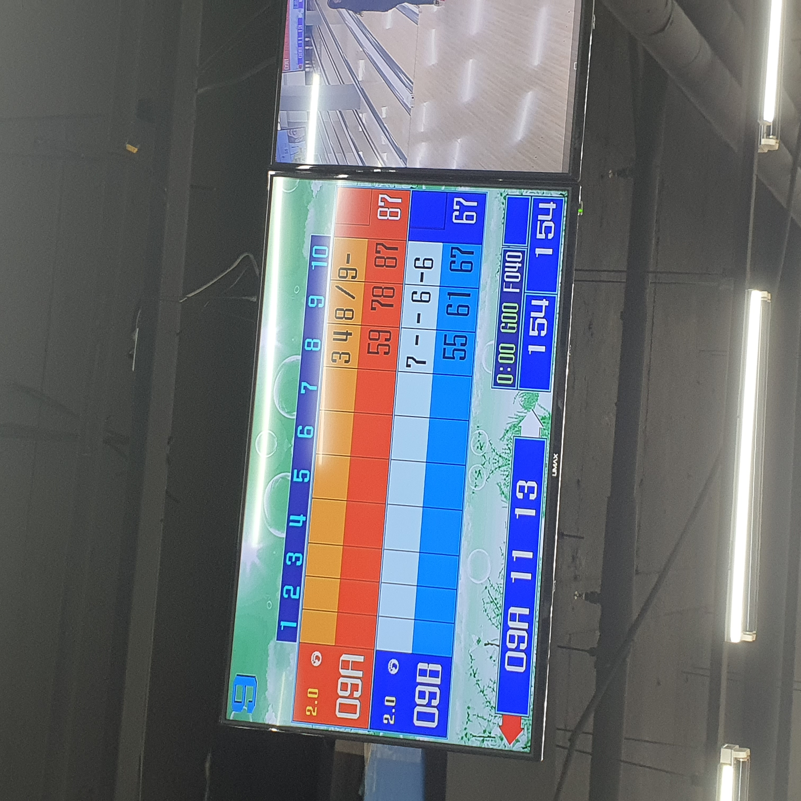

★ 현서의 일기 ★
날짜 : 2021년 8월 16일 요일 : 월요일 날씨 : 비 안오는 슬픈 날
 오늘은 곧 군대를 가는 중학교 친구를 만나고 왔다. 물론 둘이서 만난 건 아니고 중학생 때부터 제일 친한 4명이서 만났다.
넷이서는 연 초에 보고 처음 보는 거였나? 어쨌든 굉장히 오랜만에 봤는데 서로 별로 어색하지 않았다. 오히려 재밌어서 신기했다 ㅋㅋㅋㅋ 다들 별로 변한 게 없는 것 같았다.
우리는 피자를 먹고, 설빙을 갔다가, 군대로 굿바이..하는 친구를 위한 주문제작 케이크를 먹고, 볼링을 치러 가고. 수도권은 거리두기 4단계이기 때문에 1시에 만났지만 6시에 헤어졌다. 시간이 정말 빠르게 갔다.
중학교 때 친구가 군대를 간다는 게 믿기지가 않아서 그런가? 항상 볼 수 있을 것만 같은 친구였는데 이제 사회와 단절되어 못본다고 생각해서 그런가? 아직도 실감이 나지 않았지만 뭔가 기분이 묘했다.
해줄 수 있는 게 다치지 말고 잘 다녀오라는 이야기, 인편 자주 쓰겠다는 이야기밖에 없어서 그런가 기분이 좀 더 그랬다. 그렇지만 티를 많이 내지 않았다고 생각한다. ㅎㅎ 나는 감정 표현을 잘 못하는 편이 맞는 것 같다.
진짜 좋으면 잘 해주고 슬프면 울고 그러면 되는데 나는 그게 잘 안된다. 오히려 좋으면 좀 더 툴툴거리게 되고, 물론 잘 해주긴 하지만 ㅋㅋㅋㅋ 괜히 한 번씩 튕긴다(?) 그래서 이번에도 걱정이야 되지만 넌 잘 할거야 라는 식으로 말 했던 것 같다.
만약에 이 글을 보고 있다면 친구야!ㅋㅋㅋㅋㅋ 잘 갔다 와라 진심으로 다치지 말고 휴가 나오면 좀 만나주고 ㅜ 다같이 만나자 그땐 다들 2차까지 다 접종한 후일 것 같아... 어쨌든 ... 잘 다녀와 넌 항상 잘 할거란 말은 진담이었어 ^^
다시 본 글로 돌아와서, 나는 항상 그대로인 게 가장 어렵다고 생각한다. 항상 같은 학교에 다니고 방과후도 비슷한 거 듣고, 야자도 같이 했었던 때와는 다르다. 다들 다른 대학을 갔고, 다른 삶을 살고 있고. 그렇기에 많이 달라졌을 거라 생각했고, 실제로도 많이 달라졌을 지 모르는 친구들, 그리고 내가 어째선가 익숙하다.
오랜만에 만나는 사이. 어느새 시간이 흘러 우리는 확실히 변했지만 함께 있을 때만은 과거로 돌아간 것만 같았다. 항상 변함 없이 너희를 응원하고 지지해 진심이야! 내가 맘에 없는 말도 잘 못하지만 마음에 진심으로 있는 말도 영혼 담아 제대로 말 못해서... 이렇게 글로 나마 전한다. 사랑한다 얘들아 ^^♥
넷이서는 연 초에 보고 처음 보는 거였나? 어쨌든 굉장히 오랜만에 봤는데 서로 별로 어색하지 않았다. 오히려 재밌어서 신기했다 ㅋㅋㅋㅋ 다들 별로 변한 게 없는 것 같았다.
우리는 피자를 먹고, 설빙을 갔다가, 군대로 굿바이..하는 친구를 위한 주문제작 케이크를 먹고, 볼링을 치러 가고. 수도권은 거리두기 4단계이기 때문에 1시에 만났지만 6시에 헤어졌다. 시간이 정말 빠르게 갔다.
중학교 때 친구가 군대를 간다는 게 믿기지가 않아서 그런가? 항상 볼 수 있을 것만 같은 친구였는데 이제 사회와 단절되어 못본다고 생각해서 그런가? 아직도 실감이 나지 않았지만 뭔가 기분이 묘했다.
해줄 수 있는 게 다치지 말고 잘 다녀오라는 이야기, 인편 자주 쓰겠다는 이야기밖에 없어서 그런가 기분이 좀 더 그랬다. 그렇지만 티를 많이 내지 않았다고 생각한다. ㅎㅎ 나는 감정 표현을 잘 못하는 편이 맞는 것 같다.
진짜 좋으면 잘 해주고 슬프면 울고 그러면 되는데 나는 그게 잘 안된다. 오히려 좋으면 좀 더 툴툴거리게 되고, 물론 잘 해주긴 하지만 ㅋㅋㅋㅋ 괜히 한 번씩 튕긴다(?) 그래서 이번에도 걱정이야 되지만 넌 잘 할거야 라는 식으로 말 했던 것 같다.
만약에 이 글을 보고 있다면 친구야!ㅋㅋㅋㅋㅋ 잘 갔다 와라 진심으로 다치지 말고 휴가 나오면 좀 만나주고 ㅜ 다같이 만나자 그땐 다들 2차까지 다 접종한 후일 것 같아... 어쨌든 ... 잘 다녀와 넌 항상 잘 할거란 말은 진담이었어 ^^
다시 본 글로 돌아와서, 나는 항상 그대로인 게 가장 어렵다고 생각한다. 항상 같은 학교에 다니고 방과후도 비슷한 거 듣고, 야자도 같이 했었던 때와는 다르다. 다들 다른 대학을 갔고, 다른 삶을 살고 있고. 그렇기에 많이 달라졌을 거라 생각했고, 실제로도 많이 달라졌을 지 모르는 친구들, 그리고 내가 어째선가 익숙하다.
오랜만에 만나는 사이. 어느새 시간이 흘러 우리는 확실히 변했지만 함께 있을 때만은 과거로 돌아간 것만 같았다. 항상 변함 없이 너희를 응원하고 지지해 진심이야! 내가 맘에 없는 말도 잘 못하지만 마음에 진심으로 있는 말도 영혼 담아 제대로 말 못해서... 이렇게 글로 나마 전한다. 사랑한다 얘들아 ^^♥